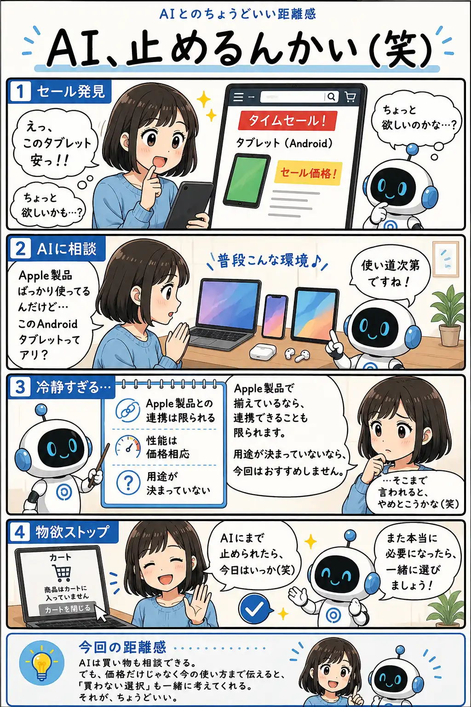

#055
AI、止めるんかい（笑）
セールより、今の使い方を見てくれた。

メモ
セールで安くなっている商品を見ると、「今買わないと損かも」と思ってしまうことがあります。
でも、買い物で大事なのは価格だけではありません。今使っている環境と合うか、実際に使う場面があるか、買った後に気持ちよく使えるかも判断材料になります。
AIに相談する時は、商品名だけでなく「普段どう使っているか」も伝えると、買う理由だけでなく、買わない理由も一緒に整理してくれます。
今回の距離感
AIは買い物も相談できる。でも、価格だけじゃなく今の使い方まで伝えると、「買わない選択」も一緒に考えてくれる。それが、ちょうどいい。